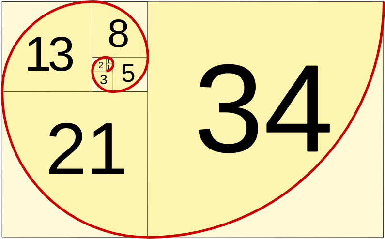
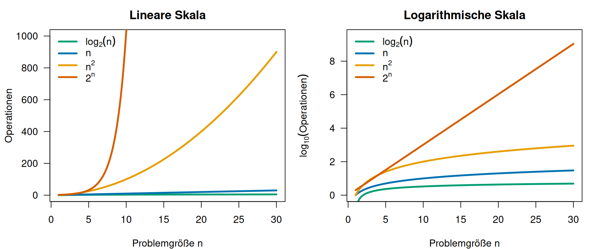

Fortgeschrittene mathematische Methoden in der Statistik
fabian.scheipl@lmu.de)\[ \definecolor{fmmgreen}{RGB}{0,158,115} \definecolor{fmmblue}{RGB}{0,114,178} \definecolor{fmmred}{RGB}{213,94,0} \definecolor{fmmorange}{RGB}{230,159,0} \definecolor{fmmpurple}{RGB}{158,87,213} \newcommand{\ind}{\unicode{x1D7D9}} \newcommand{\R}{{\mathbb{R}}} \newcommand{\N}{{\mathbb{N}}} \newcommand{\Q}{{\mathbb{Q}}} \newcommand{\C}{\mathbb{C}} \newcommand{\P}{\mathbb{P}} \newcommand{\Z}{{\mathbb{Z}}} \newcommand{\E}{{\mathbb{E}}} \newcommand{\K}{{\mathbb{K}}} \newcommand{\L}{\mathbb{L}} \newcommand{\F}{{\mathbb{F}}} \newcommand{\G}{\mathbb{G}} \newcommand{\S}{\mathbb{S}} \newcommand{\D}{{\mathbb{D}}} \newcommand{\bnull}{{\boldsymbol{0}}} \newcommand{\bzero}{{\boldsymbol{0}}} \newcommand{\ba}{{\boldsymbol{a}}} \newcommand{\bb}{{\boldsymbol{b}}} \newcommand{\bc}{{\boldsymbol{c}}} \newcommand{\bd}{{\boldsymbol{d}}} \newcommand{\be}{{\boldsymbol{e}}} \newcommand{\bg}{{\boldsymbol{g}}} \newcommand{\bh}{{\boldsymbol{h}}} \newcommand{\bi}{{\boldsymbol{i}}} \newcommand{\bj}{{\boldsymbol{j}}} \newcommand{\bk}{{\boldsymbol{k}}} \newcommand{\bl}{{\boldsymbol{l}}} \newcommand{\bn}{{\boldsymbol{n}}} \newcommand{\bo}{{\boldsymbol{o}}} \newcommand{\bp}{{\boldsymbol{p}}} \newcommand{\bq}{{\boldsymbol{q}}} \newcommand{\br}{{\boldsymbol{r}}} \newcommand{\bs}{{\boldsymbol{s}}} \newcommand{\bt}{{\boldsymbol{t}}} \newcommand{\bu}{{\boldsymbol{u}}} \newcommand{\bv}{{\boldsymbol{v}}} \newcommand{\bw}{{\boldsymbol{w}}} \newcommand{\bx}{{\boldsymbol{x}}} \newcommand{\by}{{\boldsymbol{y}}} \newcommand{\bz}{{\boldsymbol{z}}} \newcommand{\bA}{{\boldsymbol{A}}} \newcommand{\bB}{{\boldsymbol{B}}} \newcommand{\bC}{{\boldsymbol{C}}} \newcommand{\bD}{{\boldsymbol{D}}} \newcommand{\bE}{{\boldsymbol{E}}} \newcommand{\bF}{{\boldsymbol{F}}} \newcommand{\bG}{{\boldsymbol{G}}} \newcommand{\bH}{{\boldsymbol{H}}} \newcommand{\bI}{{\boldsymbol{I}}} \newcommand{\bJ}{{\boldsymbol{J}}} \newcommand{\bK}{{\boldsymbol{K}}} \newcommand{\bL}{{\boldsymbol{L}}} \newcommand{\bM}{{\boldsymbol{M}}} \newcommand{\bN}{{\boldsymbol{N}}} \newcommand{\bO}{{\boldsymbol{O}}} \newcommand{\bP}{{\boldsymbol{P}}} \newcommand{\bQ}{{\boldsymbol{Q}}} \newcommand{\bR}{{\boldsymbol{R}}} \newcommand{\bS}{{\boldsymbol{S}}} \newcommand{\bT}{{\boldsymbol{T}}} \newcommand{\bU}{{\boldsymbol{U}}} \newcommand{\bV}{{\boldsymbol{V}}} \newcommand{\bW}{{\boldsymbol{W}}} \newcommand{\bX}{{\boldsymbol{X}}} \newcommand{\bY}{{\boldsymbol{Y}}} \newcommand{\bZ}{{\boldsymbol{Z}}} \newcommand{\tagqed}{\tag*{$\blacksquare$}} \newcommand{\Acal}{{\mathcal{A}}} \newcommand{\Bcal}{{\mathcal{B}}} \newcommand{\Ccal}{{\mathcal{C}}} \newcommand{\Dcal}{{\mathcal{D}}} \newcommand{\Ecal}{{\mathcal{E}}} \newcommand{\Fcal}{{\mathcal{F}}} \newcommand{\Gcal}{{\mathcal{G}}} \newcommand{\Hcal}{{\mathcal{H}}} \newcommand{\Ical}{{\mathcal{I}}} \newcommand{\Jcal}{{\mathcal{J}}} \newcommand{\Kcal}{{\mathcal{K}}} \newcommand{\Lcal}{{\mathcal{L}}} \newcommand{\Mcal}{{\mathcal{M}}} \newcommand{\Ncal}{{\mathcal{N}}} \newcommand{\Ocal}{{\mathcal{O}}} \newcommand{\Pcal}{{\mathcal{P}}} \newcommand{\Qcal}{{\mathcal{Q}}} \newcommand{\Rcal}{{\mathcal{R}}} \newcommand{\Scal}{{\mathcal{S}}} \newcommand{\Tcal}{{\mathcal{T}}} \newcommand{\Ucal}{{\mathcal{U}}} \newcommand{\Vcal}{{\mathcal{V}}} \newcommand{\Wcal}{{\mathcal{W}}} \newcommand{\Xcal}{{\mathcal{X}}} \newcommand{\Ycal}{{\mathcal{Y}}} \newcommand{\Zcal}{{\mathcal{Z}}} \newcommand{\eps}{{\varepsilon}} \newcommand{\beps}{{\boldsymbol{\epsilon}}} \newcommand{\balpha}{{\boldsymbol{\alpha}}} \newcommand{\bbeta}{{\boldsymbol{\beta}}} \newcommand{\bchi}{{\boldsymbol{\chi}}} \newcommand{\bdelta}{{\boldsymbol{\delta}}} \newcommand{\bDelta}{{\boldsymbol{\Delta}}} \newcommand{\bepsilon}{{\boldsymbol{\epsilon}}} \newcommand{\bphi}{{\boldsymbol{\phi}}} \newcommand{\bgamma}{{\boldsymbol{\gamma}}} \newcommand{\betah}{{\boldsymbol{\eta}}} \newcommand{\btheta}{{\boldsymbol{\theta}}} \newcommand{\biota}{{\boldsymbol{\iota}}} \newcommand{\bkappa}{{\boldsymbol{\kappa}}} \newcommand{\blambda}{{\boldsymbol{\lambda}}} \newcommand{\bLambda}{{\boldsymbol{\Lambda}}} \newcommand{\bmu}{{\boldsymbol{\mu}}} \newcommand{\bnu}{{\boldsymbol{\nu}}} \newcommand{\bomikron}{{\boldsymbol{\omicron}}} \newcommand{\bpi}{{\boldsymbol{\pi}}} \newcommand{\bSigma}{{\boldsymbol{\Sigma}}} \newcommand{\bxi}{{\boldsymbol{\xi}}} \newcommand{\bzeta}{{\boldsymbol{\zeta}}} \newcommand{\bomega}{{\boldsymbol{\omega}}} \newcommand{\equivto}{{\Leftrightarrow}} \newcommand{\quequiv}{{\quad \equivto \quad}} \newcommand{\impl}{{\implies}} \newcommand{\quimpl}{{\quad \implies \quad}} \newcommand{\implby}{{\impliedby}} \newcommand{\notimplies}{\not\implies} \newcommand{\tr}{{\operatorname{tr}}} \newcommand{\spann}{{\operatorname{span}}} \newcommand{\col}{{\operatorname{col}}} \newcommand{\rang}{{\operatorname{rang}}} \newcommand{\diag}{{\operatorname{diag}}} \newcommand{\vec}{\operatorname{vec}} \newcommand{\pinv}{{^{+}}} \newcommand{\kron}{\mathbin{\otimes_{\mathrm{K}}}} \newcommand{\sign}{{\operatorname{sign}}} \newcommand{\la}{{\langle}} \newcommand{\ra}{{\rangle}} \newcommand{\inner}[1]{{\langle #1 \rangle}} \newcommand{\proj}{{\operatorname{proj}}} \newcommand{\bar}{\overline} \newcommand{\vol}{{\operatorname{vol}}} \newcommand{\dx}{{\, \mathrm{d}x}} \newcommand{\ol}{{\overline}} \newcommand{\argmax}{\mathop{\mathrm{arg\,max}}} \newcommand{\argmin}{\mathop{\mathrm{arg\,min}}} \newcommand{\conv}{\mathop{\mathrm{conv}}} \newcommand{\epi}{\mathop{\mathrm{epi}}} \newcommand{\interior}{\mathop{\mathrm{int}}} \newcommand{\Pr}{\mathbb{P}} \newcommand{\var}{{\mathbb{V}\mathrm{ar}}} \newcommand{\bias}{{\operatorname{bias}}} \newcommand{\abias}{{\mathrm{ABias}}} \newcommand{\AMSE}{{\mathrm{AMSE}}} \newcommand{\AMISE}{{\mathrm{AMISE}}} \newcommand{\cov}{{\mathbb{C}\mathrm{ov}}} \newcommand{\corr}{{\mathrm{Corr}}} \newcommand{\ov}{{\overline}} \newcommand{\wh}[1]{{\widehat{#1}}} \newcommand{\wt}[1]{{\widetilde{#1}}} \newcommand{\tod}{{\stackrel{d}{\to}}} \newcommand{\sumin}{{\sum_{i = 1}^n}} \newcommand{\sumjn}{{\sum_{j = 1}^n}} \newcommand{\KL}{{\operatorname{KL}}} \newcommand{\softmax}{{\operatorname{SoftMax}}} \newcommand{\layernorm}{{\operatorname{LayerNorm}}} \newcommand{\avg}{{\operatorname{avg}}} \newcommand{\relu}{{\operatorname{ReLu}}} \newcommand{\VC}{{\operatorname{VC}}} \newcommand{\indep}{{\perp \!\!\! \perp}} \newcommand{\unif}{{\operatorname{Unif}}} \newcommand{\bern}{{\operatorname{Bernoulli}}} \newcommand{\binomial}{{\operatorname{Binomial}}} \newcommand{\MSE}{{\operatorname{MSE}}} \newcommand{\iid}{\textit{iid}\;} \newcommand{\IF}{{\operatorname{IF} }} \newcommand{\BIC}{{\operatorname{BIC}}} \newcommand{\AIC}{{\operatorname{AIC}}} \newcommand{\IC}{{\operatorname{IC}}} \newcommand{\expl}[1]{{\tag*{[#1]}}} \newcommand{\cb}[1]{\textbf{#1}} \newcommand{\cbgreen}[1]{\textcolor{fmmgreen}{\textbf{#1}}} \newcommand{\cbred}[1]{\textcolor{fmmred}{\textbf{#1}}} \newcommand{\cbpurp}[1]{\textcolor{fmmpurple}{\textbf{#1}}} \newcommand{\cborange}[1]{\textcolor{fmmorange}{\textbf{#1}}} \newcommand{\corange}[1]{{\textcolor{fmmorange}{#1}}} \newcommand{\cblue}[1]{{\textcolor{fmmblue}{#1}}} \newcommand{\cgreen}[1]{{\textcolor{fmmgreen}{#1}}} \newcommand{\cred}[1]{{\textcolor{fmmred}{#1}}} \newcommand{\cpurp}[1]{{\textcolor{fmmpurple}{#1}}} \newcommand{\symbf}[1]{\boldsymbol{#1}} \]
Gegeben Problem \(f\) mit Input \(\bx\), berechne Lösung \(f(\bx)\).
Erst raten, dann ausführen!
Was geben diese Codezeilen aus?
[1] 0Problem: Berechne die Varianz von \(\bx\) mit der Formel \[\text{Var}(\bx) = \frac{1}{n}\sum_{i=1}^n x_i^2 - \left(\frac{1}{n}\sum_{i=1}^n x_i\right)^2\]
Daten: \(\bx = (4 + 10^9,\, 7 + 10^9,\, 13 + 10^9,\, 16 + 10^9)\)
Berechnung:
[1] 22.5[1] 0Problem: Gleitkomma-Addition ist nicht assoziativ!
Konkretes Beispiel: Seien \(x = 10^{30}\), \(y = -10^{30}\), \(z = 1\).
\[\begin{align*} (x + y) + z &= (\cred{10^{30}} + \cred{(-10^{30})}) + \cgreen{1} = 0 + \cgreen{1} = \cgreen{1} \\ x + (y + z) &= 10^{30} + ((-10^{30}) + \cgreen{1}) \stackrel{!!}{\approx} \cred{10^{30}} + \cred{(-10^{30})} = 0 \end{align*}\]
\(\implies\) Reihenfolge der Summe beeinflusst Ergebnis!!
Def.: Algorithmus
Ein Algorithmus ist ein Verfahren \(\wt f = \wt f_s \circ \cdots \circ \wt f_1\), das für Inputs \(\bx\) eine mögliche Lösung \(\wt f(\bx)\) des Problems \(f(\bx)\) berechnet.
Arten von Algorithmen

Der Algorithmus ist …
Oft kombiniert: ML-Algorithmen sind oft iterativ + approximativ + probabilistisch!
Problem:
“Koche Schweinebraten wie bei Oma.”
Algorithmus \(\leftrightarrow\) Kochrezept
Computer \(\leftrightarrow\) Koch (der sich ans Rezept hält, aber Fehler macht)
Wir wollen Algorithmen, die
Problem: Berechne \(\by = \bA\bx\) für \(\bA \in \R^{3 \times 2}\), \(\bx \in \R^2\).
Konkret: \(\bA = \begin{pmatrix} \cblue{1} & \cblue{2} \\ \cgreen{3} & \cgreen{4} \\ \corange{5} & \corange{6} \end{pmatrix}\), \(\bx = \begin{pmatrix} \cpurp{7} \\ \cpurp{8} \end{pmatrix}\)
Berechnung: \[\begin{align*} \cblue{y_1} &= \cblue{1} \cdot \cpurp{7} + \cblue{2} \cdot \cpurp{8} = \cblue{7 + 16 = 23} \quad \text{(2 Mult., 1 Add.)} \\ \cgreen{y_2} &= \cgreen{3} \cdot \cpurp{7} + \cgreen{4} \cdot \cpurp{8} = \cgreen{21 + 32 = 53} \quad \text{(2 Mult., 1 Add.)} \\ \corange{y_3} &= \corange{5} \cdot \cpurp{7} + \corange{6} \cdot \cpurp{8} = \corange{35 + 48 = 83} \quad \text{(2 Mult., 1 Add.)} \end{align*}\]
Sei \(\bA \in \R^{n \times d}\), \(\bx, \by \in \R^d\), \[f(\bA, \bx, \by) = \bA(\bx - \by) = \sum_{i = 1}^d (x_i - y_i) \bA_{\cdot i}.\]
a) Wie viele elementare Rechenoperationen werden benötigt?
b) Für wie viele Gleitkommazahlen brauchen wir Speicherplatz?
a) Zeitaufwand: \(2nd + d\) Operationen
Aufschlüsselung pro Iteration (\(i = 1, \ldots, d\)):
f <- f + ... \(\to n\) AdditionenPro Iteration: \(1 + n + n = 2n + 1\) Operationen
Gesamt: \(d \times (2n + 1) = 2nd + d\) Operationen
b) Speicheraufwand: \(n + nd + 2d\) Gleitkommazahlen
f) + \(nd\) (für \(\bA\)) + \(2d\) (für \(\bx\) und \(\by\))Beispiel:
\(\implies\) Der Algorithmus skaliert wie \(4n^3\),
die Komplexität ist kubischer Ordnung: “\(O(n^3)\)”.

Wie verschiedene Komplexitäten skalieren:
Interpretation:
Vorsicht:
\(O()\)-Notation ignoriert konstante Faktoren und Terme – z.B.
Def.: Landausymbole
Seien \(a_n, b_n\) Folgen mit \(b_n \neq 0\).
Interpretation:
Beispiel: Zeige, dass \(3n^2 + 5n = O(n^2)\)
\[\begin{align*} \lim_{n \to \infty} \frac{\cgreen{3n^2} + \cred{5n}}{n^2} &= \lim_{n \to \infty} \left(\cgreen{3} + \cred{\frac{5}{n}}\right) = \cgreen{3} < \infty \\ \implies 3n^2 + 5n &= O(n^2) \quad \checkmark \end{align*}\]
Weitere Rechenbeispiele: siehe Anhang
Lemma: Ein paar Rechenregeln
Seien \(a_n, b_n > 0\) (z.B. Anzahl von Operationen).
Beispiel Addition und Multiplikation:
Gegeben: \(f_n = 3n^2 = O(n^2)\) und \(g_n = 5n = O(n)\)
\[\begin{align*} \text{Addition:} \quad f_n + g_n &= \cgreen{3n^2} + \cred{5n} = O(\cgreen{n^2} + \cred{n}) = O(\cgreen{n^2}) \\ & \text{(wegen Regel 3: } \cred{n} = O(\cgreen{n^2}) \text{)} \\[0.5em] \text{Multiplikation:} \quad f_n \cdot g_n &= (3n^2) \cdot (5n) = 15n^3 = O(n^2 \cdot n) = O(n^3) \end{align*}\]
Beispiel Vereinfachung:
Gegeben: Algorithmus benötigt \(4n^3 + 16n^2 + 239\) Operationen.
\[\begin{align*} \cgreen{4n^3} + \cred{16n^2 + 239} &= O(\cgreen{n^3} + \cred{n^2 + 1}) \\ &= O(\cgreen{n^3}) \quad \text{(da } \cred{n^2} = O(\cgreen{n^3}) \text{ und } \cred{1} = O(\cgreen{n^3}) \text{)} \end{align*}\]
\(\implies\) Wir können komplexe Ausdrücke auf dominanten Term reduzieren!
Iterativer Algorithmus:
Zeitkomplexität:
x <- numeric(n) → \(O(n)\)Speicherkomplexität:
x mit \(n\) Elementen → \(O(n)\)Naive Rekursion:
Live: Laufzeit in Sekunden für \(n = 30\) –
elapsed
0.024 elapsed
4.27 \(\implies\) Iterative Lösung ist dramatisch effizienter (\(\times 180\)) – und liefert dabei sogar alle ersten \(n\) Zahlen, während die Rekursion nur \(F_n\) berechnet!
Welche Aussagen sind wahr?
Nächste Vorlesung
Berechne die ersten 6 Fibonacci-Zahlen (\(n = 6\)):
\[\begin{align*} \wt f_1(6) &= 0 \\ \wt f_2(\wt f_1(6)) = \wt f_2(0) &= (0, 1) \\ \wt f_3(\cblue{0}, \cblue{1}) &= (0, 1, \cgreen{1}) \\ \wt f_4(0, \cblue{1}, \cblue{1}) &= (0, 1, 1, \cgreen{2}) \\ \wt f_5(0, 1, \cblue{1}, \cblue{2}) &= (0, 1, 1, 2, \cgreen{3}) \\ \wt f_6(0, 1, 1, \cblue{2}, \cblue{3}) &= (0, 1, 1, 2, 3, \cgreen{5}) \end{align*}\]
Ergebnis: \(\wt f(6) = (0, 1, 1, 2, 3, 5)\)
Beispiel 2: Zeige, dass \(5n = o(n^2)\)
\[\begin{align*} \lim_{n \to \infty} \cgreen{\frac{5n}{n^2}} &= \lim_{n \to \infty} \cgreen{\frac{5}{n}} = \cgreen{0} \implies 5n = o(n^2) \quad \checkmark \end{align*}\]
Beispiel 3: Ist \(n^2 = O(n)\)? Nein!
\[\begin{align*} \lim_{n \to \infty} \cgreen{\frac{n^2}{n}} &= \lim_{n \to \infty} \cgreen{n} = \cgreen{\infty} \quad \text{(divergiert!)} \\ \implies n^2 &\neq O(n) \end{align*}\]